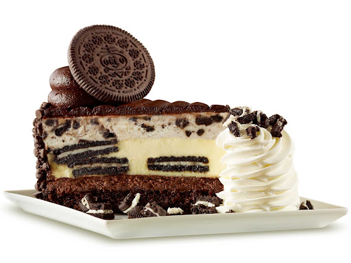

Oreo Cheesecake

Easy to prepare, this cheesecake is a great dessert to bring to your next get-together.
Ingredients
- 24 OREO Cookies, divided
- 3 tablespoons butter, melted
- 3 (250 g) packages PHILADELPHIA Brick Cream Cheese, softened
- ¾ cup sugar
- 1 teaspoon vanilla
- 3 eggs
Steps
- Heat oven to 350 degrees F.
Place 16 of the cookies in resealable plastic bag.
Flatten bag to remove excess air, then seal bag.
Finely crush cookies by rolling a rolling pin across the bag.
Place in bowl. Add butter; mix well.
Press firmly onto bottom of 9-inch springform pan.
- Beat cream cheese, sugar and vanilla in large bowl with electric mixer on medium speed until well blended.
Add eggs, 1 at a time, beating just until blended after each addition.
Chop or crush remaining 8 cookies. Gently stir half of the chopped cookies into cream cheese batter.
Pour over prepared crust; sprinkle with the remaining chopped cookies.
- Bake 45 min. or until centre is almost set. Cool. Refrigerate 3 hours or overnight.
Cut into 12 pieces. Store leftover cheesecake in refrigerator.
Return to Index